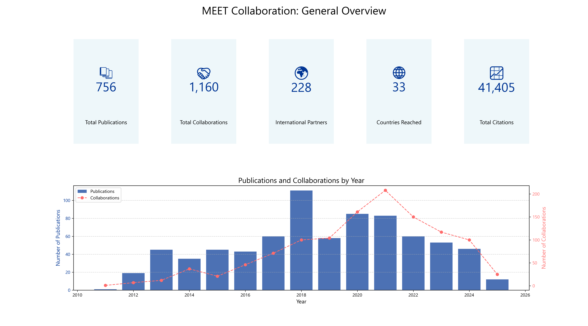
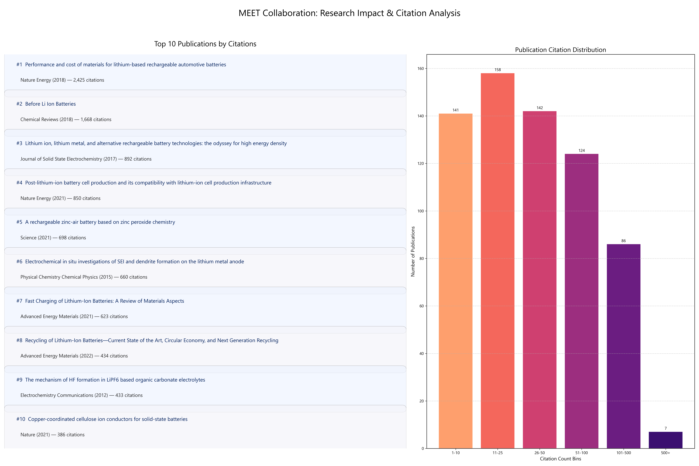

A comprehensive overview of MEET's collaborative efforts, showcasing key metrics and yearly trends.
Analysis of where MEET's partners are located, highlighting top countries by partner count and collaboration volume.

A look at the citation metrics, including top publications and overall research impact.
